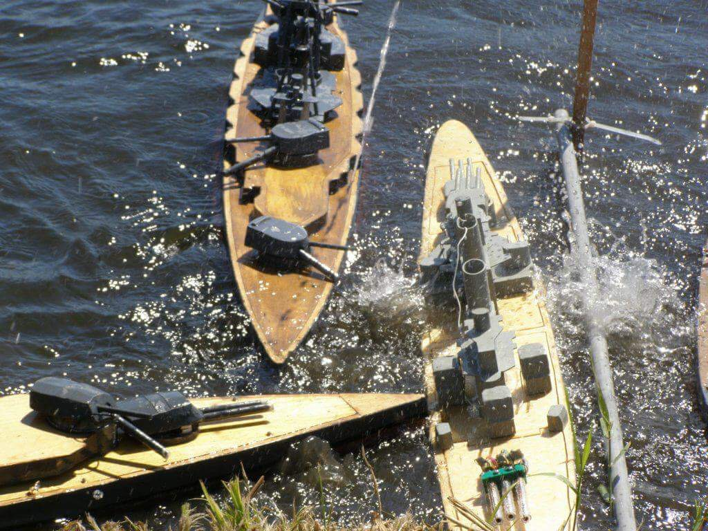

Warships (namely WW1 and WW2) have always been an interest of mine. I've created scale models of ships, planes, and tanks since I was very young. RC Warship Combat was a niche that was seemed very enticing to me, mixing the electrical know how of robotics with the fun of modeling. When the opportunity to break into the hobby emerged in my discovery of SCRAP I jumped aboard.
I bought and battled a trusty little Italian destroyer affectionately named by the veterans as the sippycup, and had lots of fun plinking at the older veterans in their battle wagons, booking it when they came to close (I wasn't very successful, as seen below). Read More...